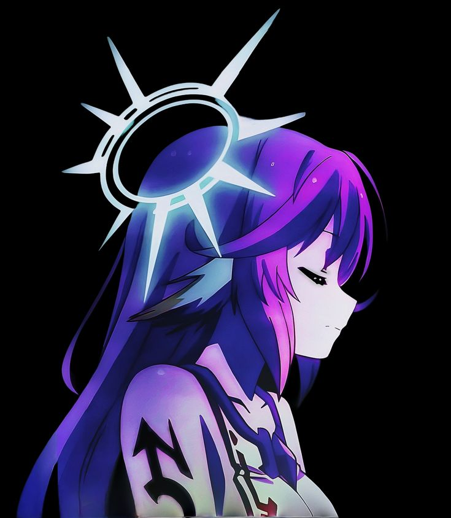

Desde sus inicios, Iris siempre ha sido una persona aventurera y con un gran amor por la creatividad.
Wiki de Jibril
Log out


Nombre: Jibril
Alias: El Ángel de la Guerra, La Última de los Flugel, Biblioteca Andante
Pronombres: Ella / She
Personalidad: Intelectual, orgullosa, curiosa, excéntrica, leal, amante del conocimiento
📖 Historia
🎭 Introducción
- Derrotó a innumerables razas durante la Gran Guerra.
- Se autoproclamó dueña de la biblioteca nacional de Elkia tras vencer al antiguo rey de Imanity.
- Fue la única Flügel en derrotar a sus congéneres y sobrevivir.
- Se convierte en aliada leal de los reyes de Imanity.
- Experta en más de 700 idiomas.
- Es una enciclopedia viviente de historia y magia.
🏆 Logros
- Sora y Shiro (Blank): Los admira profundamente tras ser derrotada, y les jura lealtad.
- Stephanie Dola: Aunque la trata con condescendencia al principio, eventualmente le toma cariño.
- Tet: Como a todos los personajes principales, Jibril también lo reconoce como el dios actual, aunque con reservas.
- Otros Flugel: Aunque no son enemigos directos, mantiene distancia con su propia raza tras superarlos.
🖼️ Galería
.jpg)
GIFS